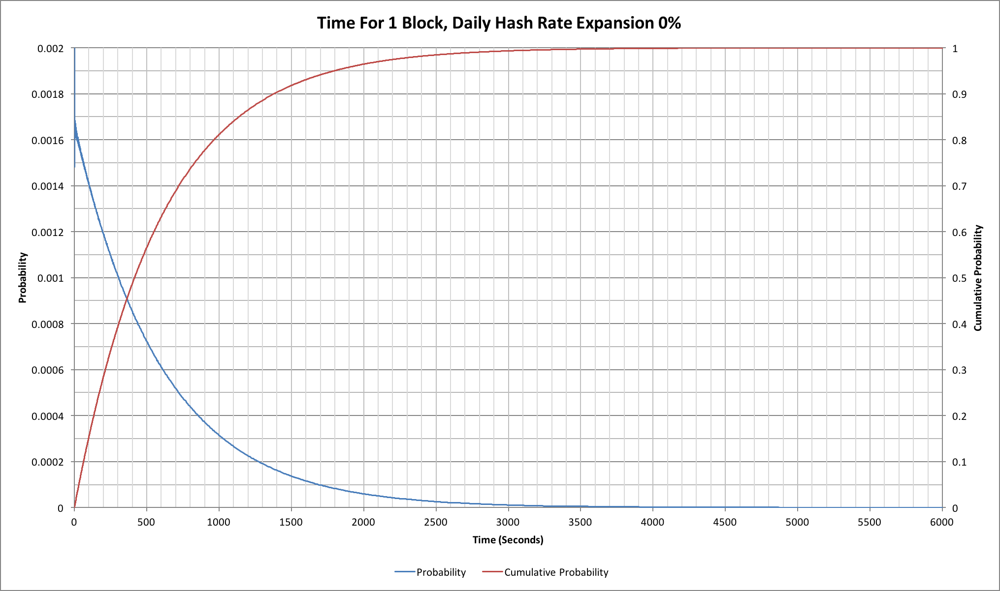
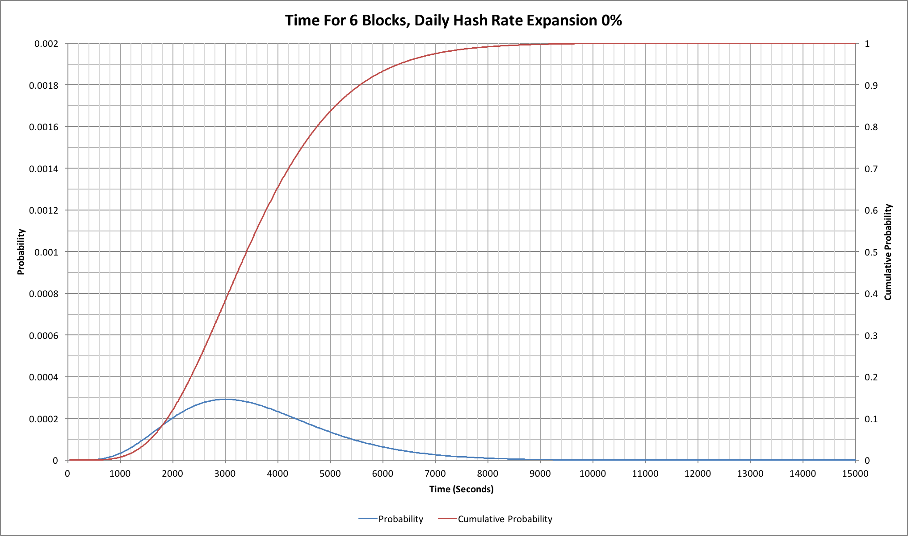
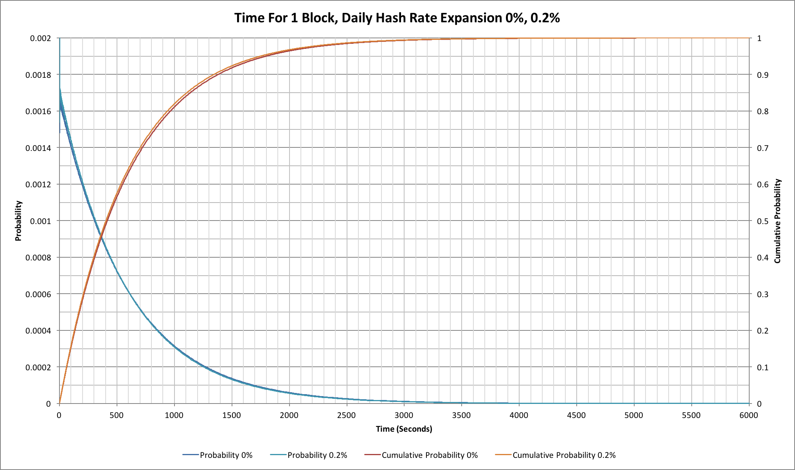
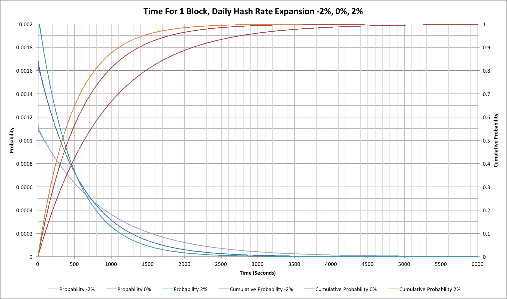
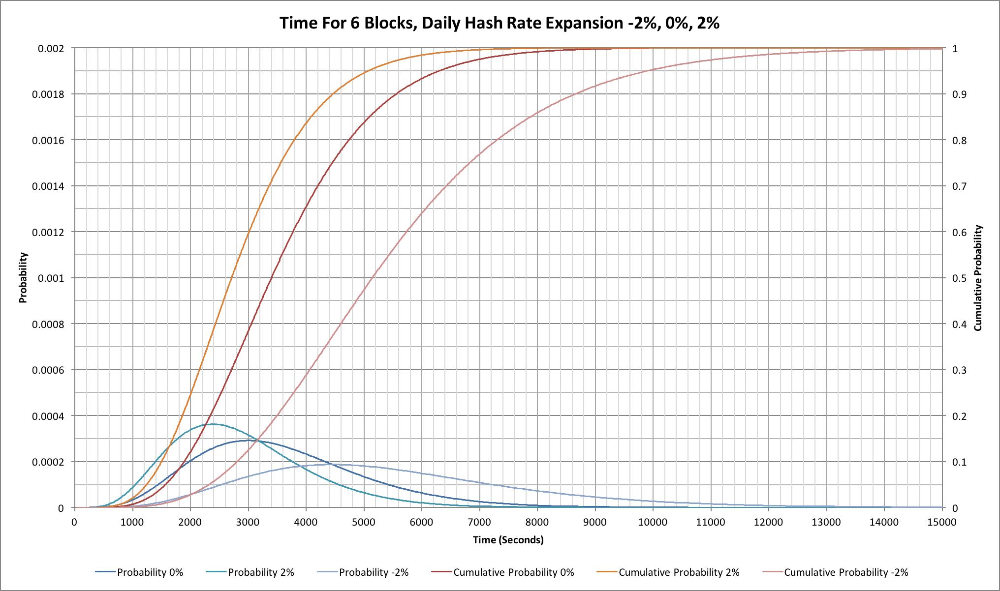

Bitcoin blocks take 10 minutes to find don’t they? Well, actually no they don’t. Sometimes they can be found really quickly, but other times they can take a very long time. Just to make things confusing, the gaps between blocks can change depending on whether the hashing network is stable, expanding or contracting. What if we need 6 blocks (to get 6 confirmations)?
So what should we expect? What happens during hashing growth phases, and what would happen if the network were to lose large amounts of hashing capacity?
Note
This article is a revised version of an earlier one, “Waiting for blocks". Unfortunately, in that article, some of the probability data wasn’t presented in the right form and this affected a few minor parts of the commentary. This revision contains updated charts and also updated commentary!
Running like clockwork?
In a somewhat perfect world we might hope that our nominal 10 minute gap between blocks would be exactly 10 minutes, but anyone who has ever watched block arrival times will know that that’s not what happens:

The blue probability line shows the incremental probability of finding a block at a given time. This might seem a little strange until we look at the red, cumulative probability, line. The cumulative probability indicates how likely it is that we already found a block by a given time, so the blue line makes more sense. As time progresses it’s more and more likely that we already found a block so the number that will be found after a long time reduces significantly.
In the Bitcoin network our mean block finding time is 10 minutes, but by the time we reach 10 minutes there’s a better than 63% probability that we’ve found a new block, not 50%. In fact 50% of blocks have been found within 415 seconds (just under 7 minutes).
The 37% of the blocks, that take longer than 10 minutes, can take a very long time to find! At an hour we’ve still not found a block a little less than 0.25% of the time; that means that typically 1 block in 401 will take more than an hour to find! There are a few subtleties to this particular number but we’ll come back to those in a little while.
If, like me, you find the 1 in 401 number was something of a surprise (that’s about once every 2.8 days on average) then it’s perhaps worth looking at some gaps between blocks. In the 12 day period up to 2015-02-05 (when the original article was written) I quickly located 5 blocks that took more than an hour to find! (the number might be higher as I was doing this manually by checking a blockchain explorer). For the record these were 340450 (77 mins), 340521 (63 mins), 340544 (67 mins), 341727 (60 mins) and 342002 (72 mins). Three of these occurred in a single 24 hour period over the 25th and 26th of January.
6 confirmations?
If a single block can take so long to find, what about the 6 blocks that we need for many simple Bitcoin clients (SPV wallets)?

We’d certainly expect that things will be closer to our anticipated 10 minutes per block and that is indeed the case. 50% of the time we’ve found 6 blocks by 3400 seconds (a little under 57 minutes). At 60 minutes we’ve found about 55% of blocks. A surprise, however, is that in 10% of cases it takes more than 5560 seconds (more than 1 hour, 32 minutes) to find 6 blocks; in 1% of cases it takes more than 7870 seconds (2 hours, 11 minutes)! On the flip side of this though, in 10% of cases we get all 6 blocks within 1890 seconds (a little under 32 minutes) and in 1% of cases we have all 6 within 1070 seconds (just under 18 minutes).
The network isn’t static!
So far none of the results we’ve seen should come as anything of a shock to anyone who understands the statistics assoicated with a Poisson process. The real Bitcoin network is somewhat more subtle though because it is really a non-homogeneous Poisson process; underlying hashing capacities change throughout each difficulty period of 2016 blocks. If we start out at, say, 300 PH/s but add 0.2% new capacity every day, then after 14 days (a little more than the 2016 blocks take) we’d have 308.5 PH/s. That means that towards the end of the 2016 blocks we’re actually going to see blocks found more quickly than at the start. In addition, as we saw in “Lies, damned lies and Bitcoin difficulties", the nominal hash rate calculated at the end of each difficulty period lags about a week behind the current hash rate.
The 0.2% increase per day isn’t a completely random number; it’s a good approximation to the underlying trend for the last couple of months. Comparing this and the “ideal” numbers where there’s no change in the network’s hash rate we can see the following:

The difference isn’t all that great. Our mean block finding time is closer to 9 minutes 45 seconds, while our mean time to see a block take an hour or longer increases to once every 480 blocks.
What about more extreme changes in hash rate?
A hash rate increase of 0.2% per day doesn’t have much effect, but what about 2% per day? 2% seems like a huge number based on recent months, but was quite common in the earlier part of 2014. At the same time as considering positive increases it seems worth considering negative changes too.
A +2% per day change corresponds to a nominal 24.8% increase in hash rate over 2016 blocks and takes about 11.2 days. The rapid increase causes us to find blocks very quickly and thus readjust the difficulty quickly. A -2% per day change has a much larger impact, however, because our 2016 blocks end up taking nearer to 21 days. This would correspond to a hash rate reduction of 34.6%.
The following curves assume a steady state change, i.e. what would happen if we’d been seeing a steady +2%, 0% or -2% change in the previous difficulty period too. As such these are more extreme that we would see in the first difficulty period for which the change was occurring; they do match a second or subsequent period:

During our +2% expansion we see a mean block time closer to 8 minutes, but with a -2% contraction the mean moves closer to 15 minutes!
Now let’s look at the same behaviour for our 6 confirmations:

As we might expect, the pattern for a single block is mirrored for 6 blocks.
Final thoughts
The Bitcoin design is surprisingly well adjusted for a network in which hash rates are expanding. Given that technologies continually improve then that’s probably the right bias as a normal schedule of replacing older, less power efficient, hardware with newer, more power efficient models will tend to see global hash rates increase.
On the surface it looks like it works much less well when we see steady contraction of the global hash rate, but such contractions are much less likely. In general miners will remove their least power efficient hardware from the network rather than their most efficient, so if the BTC price reduces the impact on the hash rate is significantly dampened.
There is another interesting aspect to the reduced block finding rate. One of the theories about the recent decline in the BTC price is that a lot of the downward pressure comes from miners selling newly-mined coins. If miners start to unplug hardware and the block finding rate falls then some of this pressure will also reduce because fewer coins will be being mined each day. Whether this actually happens or not may be an interesting indicator of what might happen when the block reward halves in 2016.
Source code
The source code for the simulation tool that generated the results for this article can be found on github at: https://github.com/hashingitcom/waiting_for_blocks